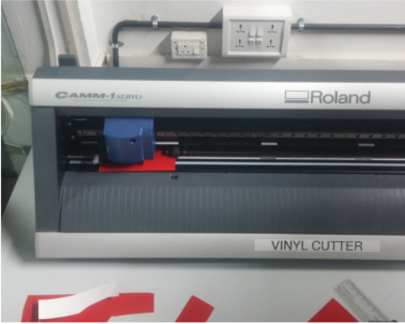
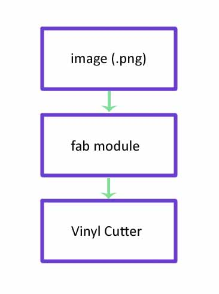
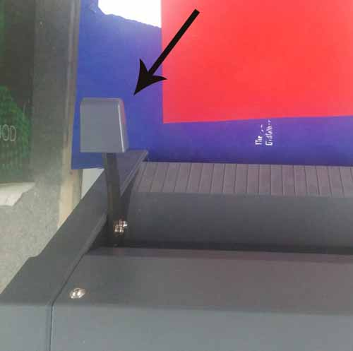
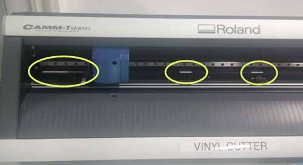
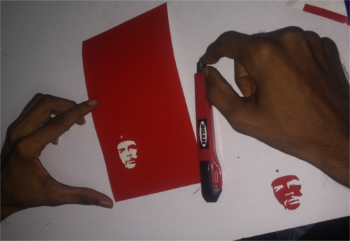
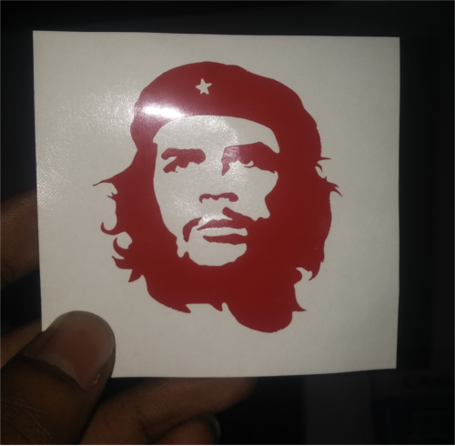
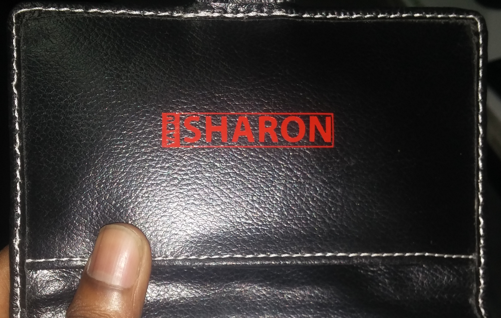

The week 2 starts with the machines. We plan to learn each machine each day. So before that some arrangements is to be done. We have to keep all the things (not the machines , but the consumables , tools, etc...) categorized. So it was the first job. We spent some time for that.
After that we started with the Vinyl Cutter (Model: Roland CAMM-1 Servo vinyl cutter). Simply a vinyl cutter is a machine which cut thin sheets like vinyl through the vector path given by the computer or any processor. It has many applications but we see it is usually used for cutting stickers.

Here we use Fab modules to drive the cutter , which takes .png file as input. As i told before, the machine cut through the vector path. SO the fab modules convert the .png file to the vector file(.svg). So for cutting a sticker , we design a the sticker in gimp or photoshop, export as .png, import it to fab module, make the vector file and give "cut". One thing we have to remember is the .png design should be in black and white (with only two states). I explain below what i did.

Design the .png file
I downloaded a pic from the net. Opened it in the gimp. It was already in black and white but i confiremd it by doing the following
Image -> Mode -> indexed
Gave the maximum number of colors to 2
Then i exported as .png
Using the fab modules
I opened the terminal and typed 'fab'. Select the input file as .png and the output process as the Roland CAMM1-Servo (.camm).
Use the "load png button" to load the png file. Resized it to 50x50 mm. Hit the Make path creat the path and then hit make .camm

Setting up the machine
First thing to do is loading the vinyl roll. For that ther is lever in the backside of the machine which is to be pulled upwards. I did it.
See the lever

I loaded the roll. while doing it we need to make ensure some things. There are some rollers in the machines which controll the move ment of vinyl in the y axis. The rollers should be on the white portions which is marked on the machines.

We can adjust the rollers over the white marks so that the the two rollers are at the edges of the vinyl roll in the x axis. Once we load the vinyl push down the liver (the same lever we pulled down to load the vinyl)
We can use not only the vinyl roll but also a piece of vinyl, and what i used is a piece. Once we load the piece of vinyl we should select the "Scan" option in the machine and hit enter. Then it wiill show us the size of the piece that can bu used. So make sure that our design size not beyound this size
So after setting up the machine parts, hit "send it" in the fab module window, and the machine will start cutting.
Next is to take the sticker and place it where we want. This is some what tricky and need some skill. Here i used a masking tap to take the sticker (which is cut)

And finally...., done!

Also see another sticker (my name ) that i designed and pasted on my HDD purse.

Will be updated soon!
Will be updated soon!
Will be updated soon!
Will be updated soon!